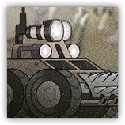
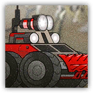

沼泽探照车 Swamp Rover
近战 物理；精英 机械

 |
能够在沼泽中平稳行驶的军用载具。搭载侦测设备，可压制隐形。 |
沼泽探照车丨Swamp Rover
大型构装（机械），无阵营
| AC 17 | 先攻 -1（9） |
| HP 114（12d10+48） | |
| 速度 40尺 | |
| 调整 | 豁免 | 调整 | 豁免 | 调整 | 豁免 | ||||||||
|---|---|---|---|---|---|---|---|---|---|---|---|---|---|
| 力量 | 20 | +5 | +5 | 敏捷 | 8 | -1 | -1 | 体质 | 18 | +4 | +6 | ||
| 智力 | 3 | -4 | -4 | 感知 | 10 | +0 | +0 | 魅力 | 1 | -5 | -5 |
| 免疫 毒素；魅惑，恐慌，中毒，力竭 |
| 感官 黑暗视觉60尺，被动察觉10 |
| 语言 ― |
| CR 5（XP 1,800；PB +3） |
特质 Traits
反隐探照 Anti-Stealth Scan。源自沼泽探照车20尺光环区域内的敌人无法从隐形中获益。
沼泽适应 Mire Traverse。沼泽探照车在困难地形中移动不受额外移动消耗。
动作 Actions
撞击 Ram。近战攻击检定：+8，触及5尺。命中：16（2d10+5）钝击伤害，目标体型不大于大型则倒地。若沼泽探照车在移动至少20尺后立即攻击，则这次攻击具有优势。
重型沼泽探照车 Heavy Swamp Rover
近战 物理；精英 机械
 |
强化车体装甲的重型探照车。更高耐久与更强冲击力使其成为攻坚单位。 |
重型沼泽探照车丨Heavy Swamp Rover
大型构装（机械），无阵营
| AC 18 | 先攻 -1（9） |
| HP 168（16d10+80） | |
| 速度 50尺 | |
| 调整 | 豁免 | 调整 | 豁免 | 调整 | 豁免 | ||||||||
|---|---|---|---|---|---|---|---|---|---|---|---|---|---|
| 力量 | 22 | +6 | +6 | 敏捷 | 8 | -1 | -1 | 体质 | 20 | +5 | +8 | ||
| 智力 | 3 | -4 | -4 | 感知 | 10 | +0 | +0 | 魅力 | 1 | -5 | -5 |
| 免疫 毒素；魅惑，恐慌，中毒，力竭 |
| 感官 黑暗视觉60尺，被动察觉10 |
| 语言 ― |
| CR 7（XP 2,900；PB +3） |
特质 Traits
反隐探照 Anti-Stealth Scan。源自沼泽探照车20尺光环区域内的敌人无法从隐形中获益。
沼泽适应 Mire Traverse。重型沼泽探照车移动忽略困难地形。
动作 Actions
多重攻击 Multiattack。重型沼泽探照车进行两次撞击攻击。
撞击 Ram。近战攻击检定：+9，触及5尺。命中：17（2d10+6）钝击伤害，目标体型不大于大型则倒地。若沼泽探照车在移动至少20尺后立即攻击，则这次攻击具有优势。